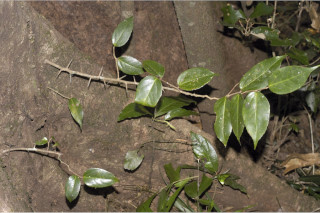
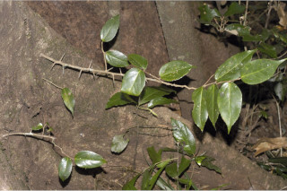
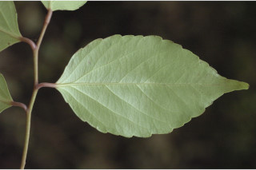
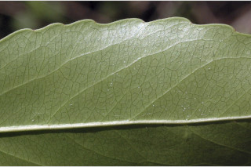
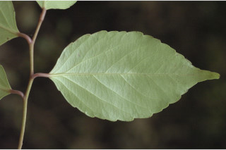
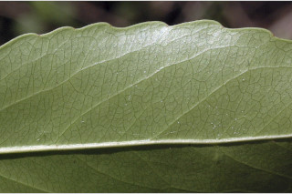

Trees up to 18 m tall.
18 ಮೀ. ಎತ್ತರದವರೆಗೆ ಬೆಳೆಯುವ ಮರಗಳು.
18 മീറ്റര് വരെ ഉയരമുളള മരങ്ങള്.
மரங்கள், 18 மீ. உயரம் வரை வளரக்கூடியது
Trunk often with branching thorns at base; branches of older trees unarmed; bark brownish, flaky; blaze cream.
ಕಾಂಡದ ಬುಡ ಹಲವು ಸಂಧರ್ಭದಲ್ಲಿ ಕವಲೊಡೆದ ದೊಡ್ಡ ಮುಳ್ಳುಗಳನ್ನುಹೊಂದಿರುತ್ತದೆ;ಬಲಿತ ಕವಲುಗಳು ರಕ್ಷಾವರಣರಹಿತವಾಗಿರುತ್ತವೆ ತೊಗಟೆ ಕಂದು ಬಣ್ಣದಲ್ಲಿರುತ್ತದೆ ಮತ್ತು ಚಕ್ಕೆ ಮಾದರಿಯಲ್ಲಿರುತ್ತದೆ;ಕಚ್ಚು ಮಾಡಿದ ಜಾಗ ಕೆನೆ ಬಣ್ಣದಲ್ಲಿರುತ್ತದೆ.
തടി സാധാരണയായി കീഴ്ഭാഗത്ത് ശാഖിതമായ മുളളുളളതാണ്; മൂത്ത മരങ്ങളുടെ ശാഖകള് മുളളില്ലാത്തവയാണ്; അടര്ന്നിളകിപ്പോകുന്ന തവിട്ട് നിറത്തിലുളള പുറംതൊലി; വെട്ട്പാടിന് ക്രീം നിറം.
மரத்தின் தண்டு தளத்தில் பொதுவாக கிளைத்த முட்களுடையது; முதிர்ந்த கிளைகள் முட்களற்றவை; மரத்தின் பட்டை ப்ரவுன் நிறமானது, உரியக்கூடியது; உள்பட்டை கிரீம் நிறமானது.
Branchlets terete, glabrous, lenticellate.
ಕಿರುಕೊಂಬೆಗಳು ದುಂಡಾಗಿದ್ದು ರೋಮರಹಿತವಾಗಿರುತ್ತವೆ ಮತ್ತು ವಾಯು ವಿನಿಮಯ ಬೆಂಡು ರಂಧ್ರ ಸಮೇತವಿರುತ್ತವೆ.
ശ്വസനരന്ധ്രങ്ങളുളള, അരോമിലമായ ഉരുണ്ട ഉപശാഖകള്.
சிறிய நுனிக்கிளைகள் குறுக்குவெட்டுத் தோற்றத்தில் வளையமானது, உரோமங்களற்றது, லெண்டிசெல் உடையது.
Leaves simple, alternate, distichous; stipule caducous; petiole 0.6-1.3 cm long, glabrous; lamina 6-11.5 x1.5-5 cm, elliptic to lanceolate, apex gradually acuminate, base acute or cuneate, slightly asymmetric, crenate-serrate at margin, coriaceous, glabrous; midrib flat above; secondary_nerves 6-8 pairs, ascending, lower most two pairs closer and oblique; tertiary_nerves reticulo-percurrent.
ಎಲೆಗಳು ಸರಳವಾಗಿದ್ದು ಪರ್ಯಾಯ ಮಾದರಿಯಲ್ಲಿ ಜೋಡಣೆಗೊಂಡಿದ್ದು ಕಾಂಡದ ಎರಡೂ ಕಡೆ ಎದುರು ಬದರಿನ ಸಾಲಿನಲ್ಲಿರುತ್ತವೆ;ಕಾವಿನೆಲೆಗಳು ಉದುರಿ ಹೋಗುವಂತವು; ತೊಟ್ಟುಗಳು 0.6 -1.3 ಸೆಂ.ಮೀ. ವರೆಗಿನ ಉದ್ದ ಹೊಂದಿದ್ದು ರೋಮರಹಿತವಾಗಿರುತ್ತವೆ; ಪತ್ರಗಳು 6-11.5X1.5-5ಸೆಂ.ಮೀ.ಗಾತ್ರ ಹೊಂದಿದ್ದು ಚತುರಸ್ರದಿಂದ ಭರ್ಜಿಯವರೆಗಿನ ಆಕಾರ ಹೊಂದಿದ್ದು, ಹಂತ ಹಂತವಾಗಿ ಕ್ರಮೇಣ ಚೂಪಾಗುವ ತುದಿ,ಚೂಪಾದ ಅಥವಾ ಬೆಣೆಯಾಕಾರದ ಹಾಗೂ ಸ್ವಲ್ಪ ಅಸಮವಾದಬುಡ ಮತ್ತು ದುಂಡೇಣು ದಂತಗಳುಳ್ಳ ಅಂಚನ್ನು ಹೊಂದಿರುತ್ತವೆ; ಮೇಲ್ಮೈ ತೊಗಲನ್ನೋಲುವ ಮಾದರಿಯಲ್ಲಿರುತ್ತದೆ ಮತ್ತು ರೋಮರಹಿತವಾಗಿರುತ್ತದೆ;ಮಧ್ಯನಾಳ ಪತ್ರದ ಮೇಲ್ಭಾಗದಲ್ಲಿ ಚಪ್ಪಟೆಯಾಗಿರುತ್ತದೆ;ಎರಡನೇ ದರ್ಜೆಯ ನಾಳಗಳು 6-8 ಜೋಡಿಗಳಿದ್ದು ಆರೋಹಣಗೊಳ್ಳುವ ಮಾದರಿಯಲ್ಲಿರುತ್ತವೆ , ತೀರಾ ತಳಗಿನ 2 ಜೋಡಿಗಳು ಸನಿಹವಾಗಿರುತ್ತವೆ ಮತ್ತು ಓರೆಯಾಗಿರುತ್ತವೆ;ಮೂರನೇ ದರ್ಜೆಯ ನಾಳಗಳು ಜಾಲ ಬಂಧ ನಾಳ ವಿನ್ಯಾಸದಲ್ಲಿದ್ದು ಎಲೆದಿಂಡಿಗೆ ಅಡ್ಡವಾಗಿ ಕೂಡುವಂತವು.
ഇലകള് ലഘുവും ഏകാന്തര ക്രമത്തില്, തണ്ടിന്റെ രണ്ടുഭാഗത്ത് മാത്രമായടുക്കിയ വിധത്തിലാണ്; എളുപ്പം കൊഴിഞ്ഞ് വീഴുന്ന അനുപര്ണ്ണങ്ങള്; അരോമിലമായ ഇലഞെട്ടിന് 0.6 സെ.മീ മുതല് 1.3 സെ.മീ വരെ നീളം; പത്രഫലകത്തിന് 6 സെ.മീ മുതല് 11.5 സെ.മീ വരെ നീളവും 1.5 സെ.മീ മുതല് 5 സെ.മീ വരെ വീതിയും, ആകൃതി ദീര്ഘവൃത്തം തൊട്ട് കുന്താകൃതിവരെയാകാം, സാവധാനം ദീര്ഘാഗ്രമാകുന്ന പത്രാഗ്രം, നിശിതമോ ആപ്പാകാരത്തിലോ ഉളള പത്രാധാരം ചെറുതായി അസമമാണ്, അരികുകള് ദന്തിതമാണ്, ചര്മ്മില പ്രകൃതം, അരോമിലം; മുഖ്യസിര മുകളില് പരന്നതാണ്; ഏറ്റവും താഴത്തെ രണ്ടു ജോഡികള് അടുത്തും ചരിഞ്ഞുമിരിക്കുന്ന ആരോഹണ ക്രമത്തിലുളള 6 മുതല് 8 വരെ ജോഡി ദ്വിതീയ ഞരമ്പുകള്; ജാലിത പെര്കറന്റ് വിധത്തിലുളള ത്രിത്രീയ ഞരമ്പുകള്.
இலைகள் தனித்தவை, மாற்றுஅடுக்கமானவை, இருநெடுக்கு வரிசையிலையடுக்கம் (டைஸ்டிக்கஸ்); இலையடிச்செதில் எளிதில் உதிரக்கூடியது; இலைக்காம்பு 0.6-1.3 செ.மீ. நீளமானது, உரோமங்களற்றது; இலை அலகு 6-11.5 X 1.5-5 செ.மீ., நீள்வட்டம் முதல் ஈட்டி வடிவானது, அலகின் நுனி சீரான அதிக்கூரியது, அலகின் தளம் கூரியது அல்லது ஆப்பு வடிவானது, சிறிது சமமற்றது, அலகின் விளிம்பு பிறை-ரம்ப பற்களுடையது, கோரியேசியஸ், உரோமங்களற்றது; மையநரம்பு மேற்பரப்பில் அலகின் பரப்பிற்கு சமமானது; இரண்டாம் நிலை நரம்புகள் 6-8 ஜோடிகள், நுனி நோக்கியவாறு வளைந்தது, தளத்திலுள்ள இரண்டு ஜோடி நரம்புகள் நெருக்கமானவை மற்றும் சாய்ந்தவை; மூன்றாம் நிலை நரம்புகள் வலைப்பின்னல்-பெர்க்கரண்ட்.
Flowers in axillary racemes, white with many stamens.
ಹೂಗಳು ಬಿಳಿ ಬಣ್ಣ ಹೊಂದಿದ್ದು ಅಕ್ಷಾಕಂಕುಳಿನಲ್ಲಿನ ಮಧ್ಯಾಭಿಸರ ಪುಷ್ಪಮಂಜರಿಯಲ್ಲಿರುತ್ತವೆ ಮತ್ತು ಅನೇಕ ಕೇಸರಗಳನ್ನು ಹೊಂದಿರುತ್ತವೆ.
ധാരാളം കേസരങ്ങളുളള, വെളുത്ത പൂക്കള്, കക്ഷ്യ റസീമുകളിലുണ്ടാകുന്നു.
மலர்கள் இலைக்கோணங்களில் அமைந்த ரெசீம் சைம் வகை மஞ்சரி, வெள்ளை நிறமானவை, எண்ணற்ற மகரந்தாள்களுடையவை.
Berry, globose, apiculate, to 2 cm across; seeds 2-6, semilunar.
ಬೆರ್ರಿಗಳು ಗೋಳಾಕಾರದಲ್ಲಿದ್ದು 2 ಸೆಂ.ಮೀ.ವರೆಗಿನ ಅಡ್ಡಳತೆ ಹೊಂದಿರುತ್ತವೆ ಮತ್ತು ಹಾಗೂ ಅಗ್ರದಲ್ಲಿ ಸೂಕ್ಷ್ಮ ಕಿರು ಮುಳ್ಳನ್ನು ಹೊಂದಿರುತ್ತವೆ; ಬೀಜಗಳು 2 ರಿಂದ 6 ಇದ್ದು ಅರ್ಧ ಚಂದ್ರಾಕಾರದಲ್ಲಿರುತ್ತವೆ.
2 തൊട്ട് 6 വരെ, അര്ദ്ധ-ചന്ദ്രാകാര വിത്തുകളുളള, മുനപ്പുളള 2 സെ.മീ കുറുകേയുളള ഗോളാകാര ബെറിയാണ്.
முழுச்சதைகனி (பெர்ரி), கோளவடிவானது, நுனி நீட்சியுடையது 2 செ.மீ. குறுக்களவுடையது; விதைகள் 2-6 அறை பிறை வடிவானது.


 



 


